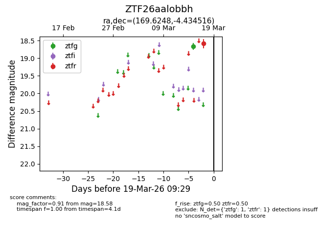
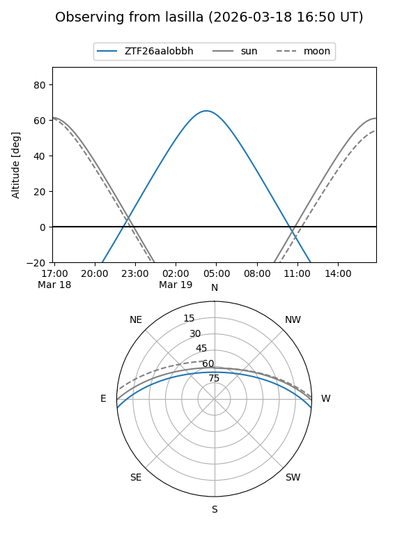
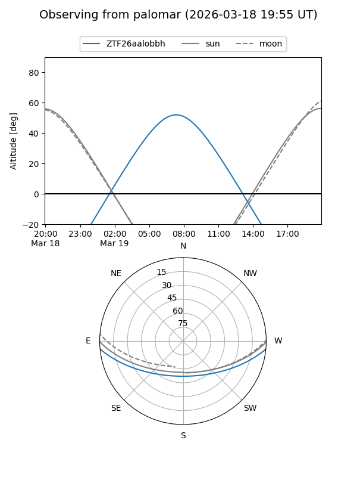

ZTF26aalobbh
Target ZTF26aalobbh at 2026-03-19 09:31
Aliases and brokers:
FINK: link
Lasair: link
ALeRCE: link
alt names
ZTF26aalobbh (ztf,fink_ztf)
Coordinates:
equatorial (ra, dec) = 169.6248,-4.43452
equatorial (HMS+DMS) = 11:18:29.96,-04:26:04.26
galactic (l, b) = (263.9812,+51.26996)
Flags:
Photometry:
last ztfg=18.66, ztfr=18.58
1 ztfg, 1 ztfr detections
Lightcurve

Visibility


Additional plots